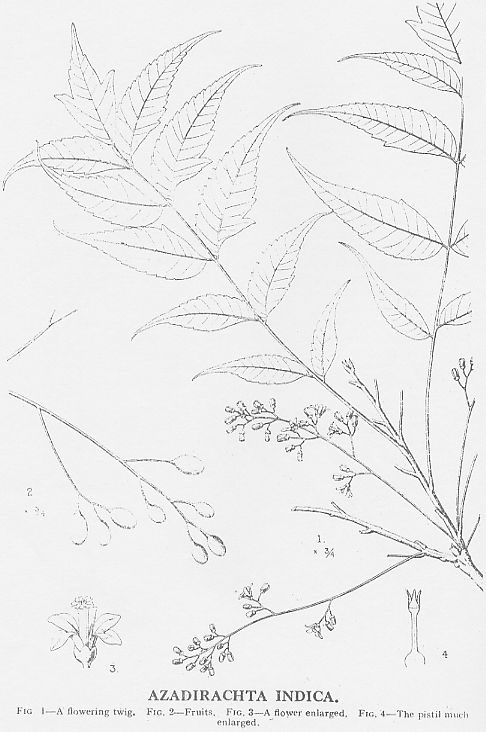
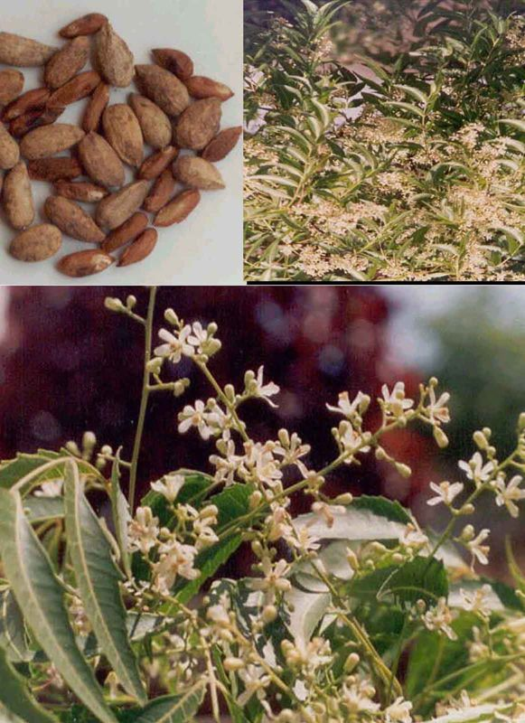

|
ECONOMICALLY
IMPORTANT PLANTS OF INDIA |
| Under-utilized Food and Fodder species and their wild relatives | Contributed by Ms.M.L Annapurna And Dr. Dhanapal, UAS, Bangalore |
Azadirectha indica A. Juss.
Taxonomic Details
----- Valid Name
----- Classification
----- Synonyms
----- Common Names
Other Biological Details
----- Habit and Habitat
----- Diagnostic Features
----- Reproductive Biology
---------- Breeding System
---------- Phenology
---------- Pollinators
---------- Seed Biology
----- Major Pests and Diseases
Economic Potential and Uses
----- Parts Used
----- Harvesting Practices
----- Produce and Products
----- Chemistry
----- Processing Techniques
----- Other uses
----- Economic Potential to the
Country
----- Export
Potential
Miscellaneous Information
Literature


Soil and Climate:
Altitude: 0-1500 m, Mean annual temperature: Up to 40 deg. C, Mean
annual rainfall: 400-1200 mm
Soil type: It grows
on a wide variety of neutral to alkaline soils but performs better than most
species on shallow, stony, sandy soils, or in places where there is a hard calcareous
or clay pan not far below the surface. It grows best on soils with a pH of 6.2-7.
It is commonly found along the roads, Coastal areas, Deciduous forest, Drier parts,
Dry areas, Dry forest, dry localities, Dry Open areas, Foothills, forest edges,
Forests, Gardens and Roadsides, Hedges, House gardens, open forest areas, Outskirts
of Village, Plains, Planted, Road sides, Scrub forests, Village Shrubberies, villages
and waste lands.
BioticZone: Alpine Western Himalaya, Deccan, Himalaya, Konkan plain, Peninsular
India, Plains, SubHimalayan tracts and Tropics.
Availability : Plenty, Throughout India
Misc: Agricultural Research Station, Aligarh road, Ambevani, Baghnadi, Balsamand,
bardez, Bastora, Chelama, Chitradurg-Davengere Road, Deccan, drier parts of
karnataka, Hollong, Hot drier parts, Hubli, Jaldapara, Kamteli, Korba, Loharia,
R.F.,Mahaballeshwar, Manasagangotri, Nanduri fort hill, Narsingi, Near Delwara temple, Near
Ratangarh,
Near Uniyara, outskirts of villages, Pantnala, Patnala, Ranakpur R.F. Road sides
and near village, Shorapur-Yadgir Road, Sindewadikuran area, Sitanadi, Srisailam,
Trombay, Tropical regions, veracunda, and Village of Katraj ghats.
Country: Burma, China, India, Malayasia, Myanmar, Pakistan, Sri Lanka and Vietnam.
Zone: Central, East, North, North East, South and West.
State: Andhra Pradesh, Arunachal Pradesh, Bihar, Goa Daman Diu, Karnataka, Kerala,
Madhya Pradesh, Maharashtra, Punjab, Rajasthan, Tamil Nadu, Uttar Pradesh and
West Bengal.
District: Agra, Allahabad, Bangalore, Banswara, Bellary, Bijapur, Bilaspur, Bombay,
Carnatic, Champaran, Chitradurga, Churu, Daman, Dharmapuri, Durg, Gulbarga,
Hassan, Jalpaiguri, Jhalawar, Jodhpur, Kurnool, Medak, Mehbubnagar, Mysore,
Nasik, North
East Districts, Palani, Pali, Pune, Raichur, Raigad, Raipur, Rajnandgaon, Satara,
Shimoga, Simla, Sirohi, South Arcot, Subansiri, Tiruchi and Tonk.
Taluk: Badami, ,Dhone and Gangdhar.
Status : Wild
REPRODUCTIVE BIOLOGY
Blossoms begin to develop on trees that are 3 - 5 years old and the tree
is reproductively mature after ten years on average giving 30-50
kg of fruit per tree. . The inflorescence is an axillary panicle. The flowers
are pentamerous, regular, small, whitish pink and borne on axillary cymose panicles
with short scattered hairs. Flower buds open in the afternoon and evening producing
a strong scent of honey at night. The bracts are minute and deciduous.
The 0.2
in (5 mm) long protandrous flowers have a sweet jasmine-like fragrance and produce
ample quantities of nectar. The capitate tri-lobed sticky stigma stands above
3 - 5 bi-ovulate carpels, and at the same level of the ten anthers which are
united into a single tube. Each flower matures only a single seed.
The fruit is a ovoid drupe with a thin mucilaginous sweet pulp. The green fruit
darkens and becomes wrinkled at maturity. The number of fruit/seeds per tree
is highly variable. Embryo abortion is common.
Breeding System :
Bisexual and male flowers
occur on the same tree. Floral anatomy and the absence of self incompatibility
facilitates self pollination via the wind. However, bees are required
to effect cross pollination which ensures optimal seed/fruit set and may limit embryo abortion. Neem flowers are fragrant and highly attractive
to bees. They are a good nectar source and a minor source of pollen for bees. The size of the pollen grain of A. indica (ca 55-65
microns in diameter) is within the size range for bee pollination.
The role of the extra floral nectaries, if any, in the pollination ecology of
Neem appears unknown.
Phenology :
Like other Meliaceae, Neem flowers from January
through April with fruit ripening in June through August. A Second minor flowering
period may occur from July to October.
Still there are reports of flowering at different periods in idfferent places
like Feb - Sept and March.-July.
Pollinators
Bees observed visiting the anemophilous Neem flowers
and effecting self- and cross pollination include Apis florea, A. cerana,
Trigona spp. and Ceratina spp. Existing knowledge suggests
that Meliaceous flowers are largely insect pollinated. Although
moths normally pollinate several species (Bawa, et al., 1985), members of this
family of plants are important sources of pollen and nectar for honey bees.
Bees are listed as the major visitors of the flowers of related species, Swietenia
macrophylla and Cedrela odorata.
Seed Germination:
Neem seedlings can be produced vegetatively by air layering, cuttings, grafting
and tissue culture, however, they are usually grown from seed in nurseries as
bare-root stock or in containers. Direct sowing is more cost-effective, but
may result in poor survival in drier zones. Neem wildlings are an inexpensive
source of seedlings, as natural regeneration is normally abundant. Although
neem is a prolific seed producer, seed supply is frequently a problem. The viability
of fresh seed decreases rapidly after two weeks, and improperly stored seeds
have low germination rates. Ripe seed should be collected from the tree and
processed immediately. First the pulp is removed and the seeds are washed clean.
Seeds are air dried for 3-7 days in the shade, or until the moisture content
is about 30%. They can then be stored for up to four months if kept at 15°C.
Seed will remain viable even longer if dried to 6-7% moisture content and refrigerated
in sealed containers at 4° C.
Sow seed in nursery beds in rows 15-25 cm apart, and 2.5-5 cm spacing within
the rows. Seedlings can be pricked out when two pairs of leaves have developed
(1-2 months), or the rows should be thinned to 15 cm x 15 cm spacing. Plastic
pots are commonly used to produce neem seedlings, although rigid container systems
are used in Haiti with success. Seeds should be sown horizontally at a depth
of 1 cm. Fresh seeds will have the highest germination rate, and seedlings will
emerge within in 1-3 weeks. Removal of the seed coat may increase germination
rates for stored seeds. Both bare-root and containerized seedlings should be
raised under partial shade for the first 1-2 months, or until about 30 cm tall,
then gradually exposed to full sunlight.
Bare-rooted seedlings are usually kept in the nursery for 1-2 years before outplanting.
The roots and shoots of seedlings lifted from nursery beds should be pruned
before transplanting. Bare-rooted seedlings can also be prepared for stump planting.
Stumps are made from 1-2 year old seedlings by trimming the root to 20-22 cm
root and the shoot to 5 cm. Containerized seedlings should be out planted after
3-4 months in the nursery, when they reach 30-50 cm. Fuel wood plantations are
laid out at a 2.5 m x 2.5 m spacing, and then later thinned to 5 m x 5 m. The
recommended spacing for windbreaks is 4 m x 2 m. Neem trees managed to maximize
fruit yield should be more widely spaced to allow the crown to develop fully.
Uses:
Harvesting Practices
Flowering starts after 5 years. In India flowering is observed during January
to May and the fruits mature from May-August (in about 5 months period). The leaves
are shed during February-March and an hectare area would produce about 8 to 10
tonnes of fresh berries per annum. Fresh fruits give 60 per cent dry fruits, which
yield 10 per cent kernel and contain on an average 45 per cent fixed oil. After
10-15 years of growth the wood can be cut and used as timber.
Produce and Products
Neem oil
To produce neem oil by hand, use the dried kernels. These firstly have to be decorticated. In a mortar, they are lightly cracked so that the outer husks are freed from the inner seed. The husks are then removed by winnowing. The decorticated seeds are returned to the mortar where they are pounded until they form a brown, slightly sticky mass. A little water is added so as to form a workable paste, which forms an almost solid ball. This ball is kneaded for several minutes over a bowl until oil collects on the surface; then press it firmly. Oil will come out in drops. Alternate kneading and squeezing will separate the oil. With this method, 100-150 ml of oil can be extracted from one kg of neem kernels. This is about half the oil content.
Currently Neem is seen to have vast business potential. While commercial viability
of Neem is not a totally new story as a lot of toothpastes, soaps, shampoos and
cosmetics have used active principles and extracts of Neem for years in India.
What is new is that modern packaging technique and technology is being incorporated
for into product development sophisticated markets.
The tremendous international interest in Neem can be gauged by the number of patents
filed on the various properties, active principles and their extraction and stabilizing
processes in US and Japan.
Over 30 patents have already been granted, and this seems to have whipped a north-south
confrontation. The issue at the core of the a worldwide debate appears to be who
controls genetic resources - traditional cultures or transnational corporations?
While this debate seems set to continue for sometime the Neem tree seems determined
to carry on its good work.
More Info: Neem - Research and Development
- Society of Pesticide Science, India